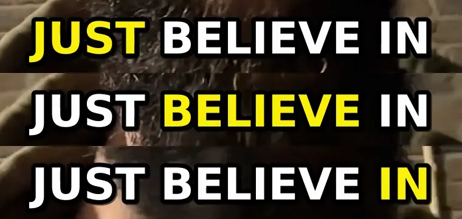
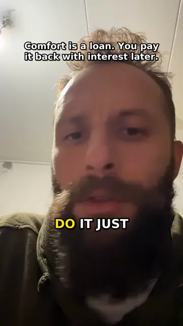
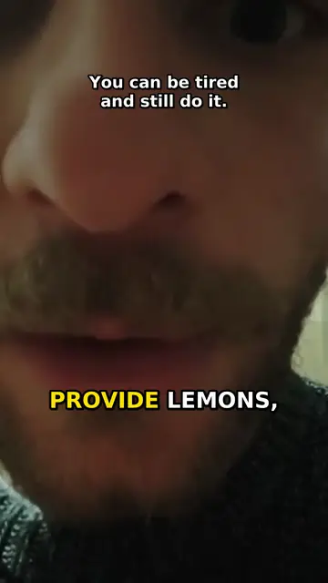
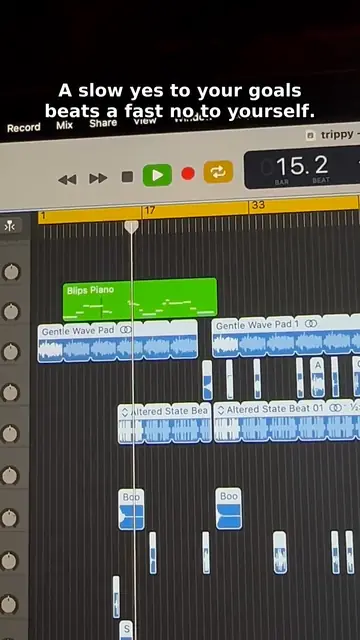
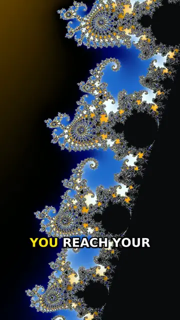
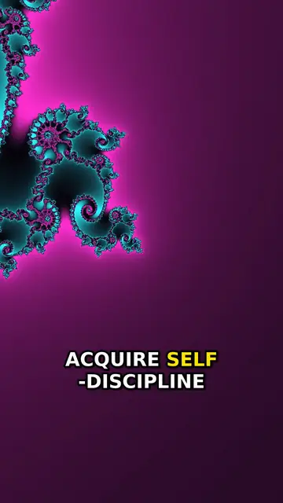

$ ./clips --auto
Automated captions and video editing
Send a video, a voice note or a line of text. Get back a finished 9:16 clip with word-by-word captions, voiceover and music, ready for TikTok, Reels or Shorts.
It runs on your own machine. No LLM calls on any run, no API bills, no per-clip cost.
Unedited pipeline output. Tap for sound.
0 LLM calls per clip
$0 per clip: open-source models and FFmpeg
~38 s to render an 11-16 s clip on a 4-CPU box
<10 MB 9:16, 30 fps, loudness-levelled output
Everything is sent from a phone through a Telegram bot. The finished clip comes back to the chat or lands in your TikTok drafts.
Real clips, straight out of the pipeline
Unretouched frames from clips it rendered. No manual editing on any of them.

One caption line over 0.8 s: the highlight follows each spoken word.





How it works
Plain Python and FFmpeg in one Docker container. Every step is deterministic and resumable.
receive Telegram bot takes a video (or an album, joined in order), a voice note or text. Flags like fractal=5 override the style for one clip. transcribe faster-whisper runs locally and returns word-level timestamps. plan Segments picked from the timestamps by rules, not a model: trim filler, cut long pauses, fit the target length. voice Your own recording, cleaned and levelled, or Kokoro text-to-speech for typed text. visuals 9:16 crop of your footage, or a Mandelbrot dive rendered in numpy with a style and target seeded per clip. music A meditative MIDI bed composed per clip and rendered with FluidSynth, so no two clips share audio. render FFmpeg burns in word-highlighted captions and the hook, mixes to -14 LUFS, caps the file at 10 MB. deliver Back to the chat, or uploaded to your TikTok drafts to post with one tap.
Why on-device
Free to run Open-source models and FFmpeg. No API keys, no per-minute pricing, no usage caps. Volume costs electricity, not invoices.
Private by default Footage never leaves your machine until you publish it. Job folders delete themselves after 30 days.
Predictable No LLM in the loop means no prompt drift and no surprise edits. Same input, same rules, same style. A failed job resumes from the step that broke.
Want this for your content?
I can set it up for your brand, fonts and channels, or build a pipeline tailored to your workflow. Book a 30 minute call.